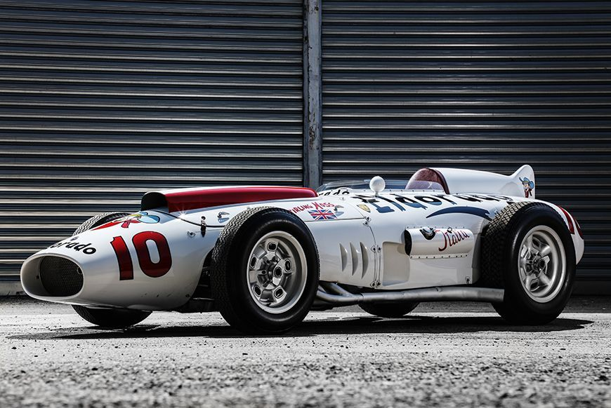
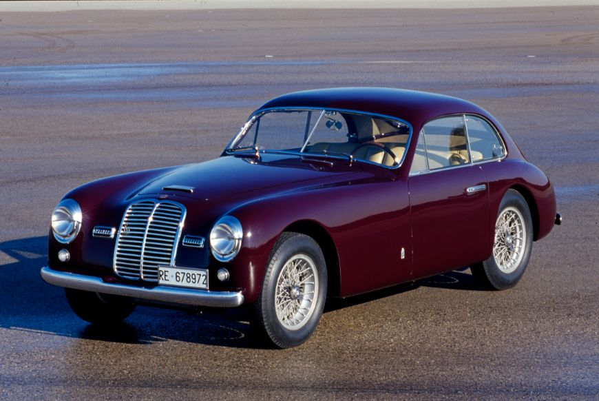
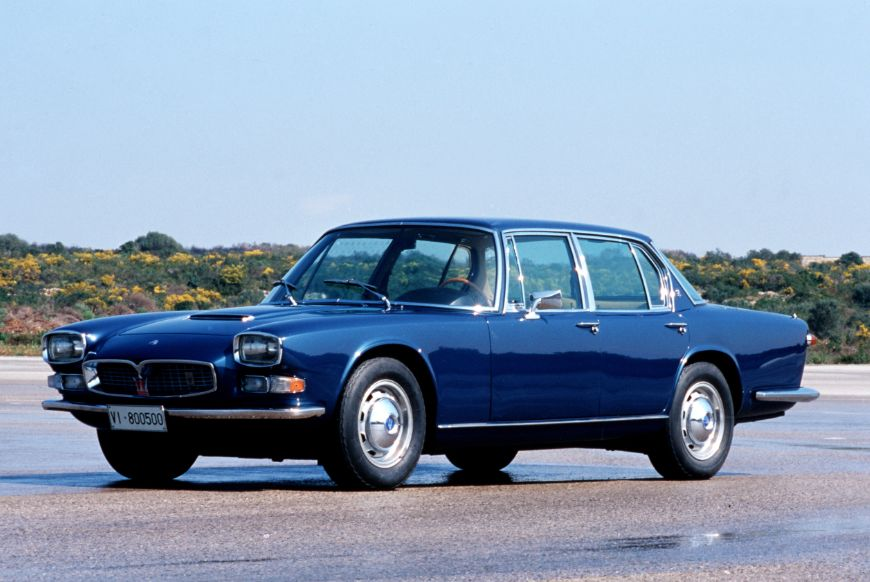
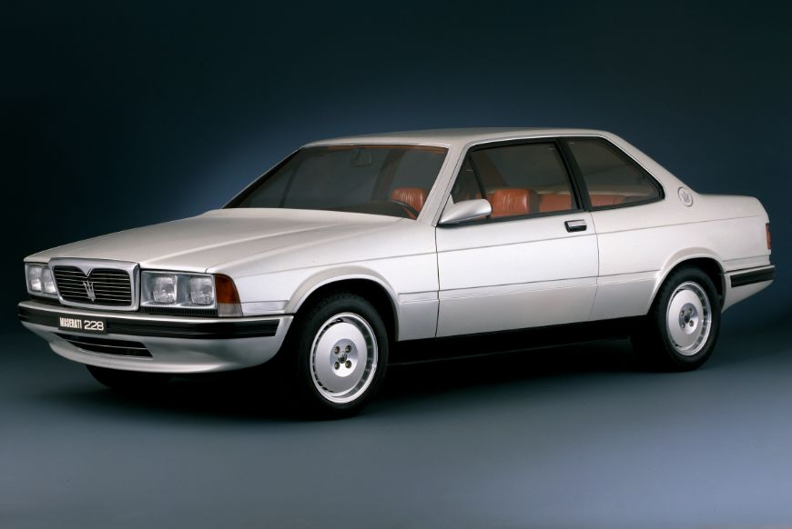
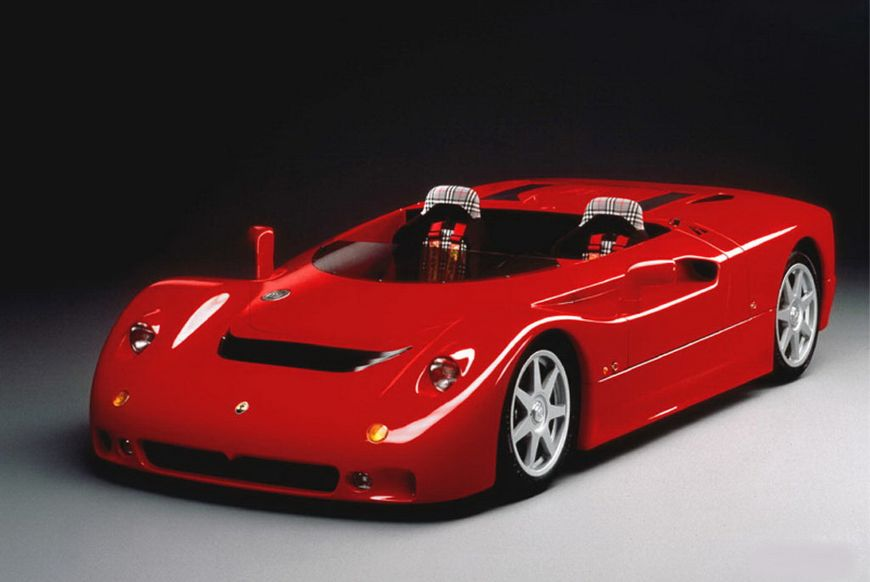

420M/58”Eldorado“ 和Tipo 60/61 ”鸟笼“
战后赛车
战后时期诞生了两款赛车：420M/58”Eldorado“ 和Tipo 60/61 ”鸟笼“

Gran Turismo
Gran Turismo是一款适合长距离高速行驶的豪华轿跑车，在追求驾驶乐趣的同时兼顾享受，每一次驾乘都是激情之旅。自1946年诞生以来，GT作为玛莎拉蒂的旗舰车型，代表着玛莎拉蒂的意式驾驶体验。Gran Turismo

Quattroporte总裁系列
Quattroporte，以舒适定义的高性能”四门轿跑车“，超越半世纪的探索，巧妙演绎出意大利豪华轿车的风采与GT跑车的运动精神。

Biturbo及其衍生车型
Biturbo是玛莎拉蒂前总裁Alejandro de Tomaso的心血之作，是一款配备双涡轮增压发动机的量产车。自1981年起，Biturbo原始车型共计衍生五十余款全新系列，成为了20年间来玛莎拉蒂代表性的车型。Gran Turismo
